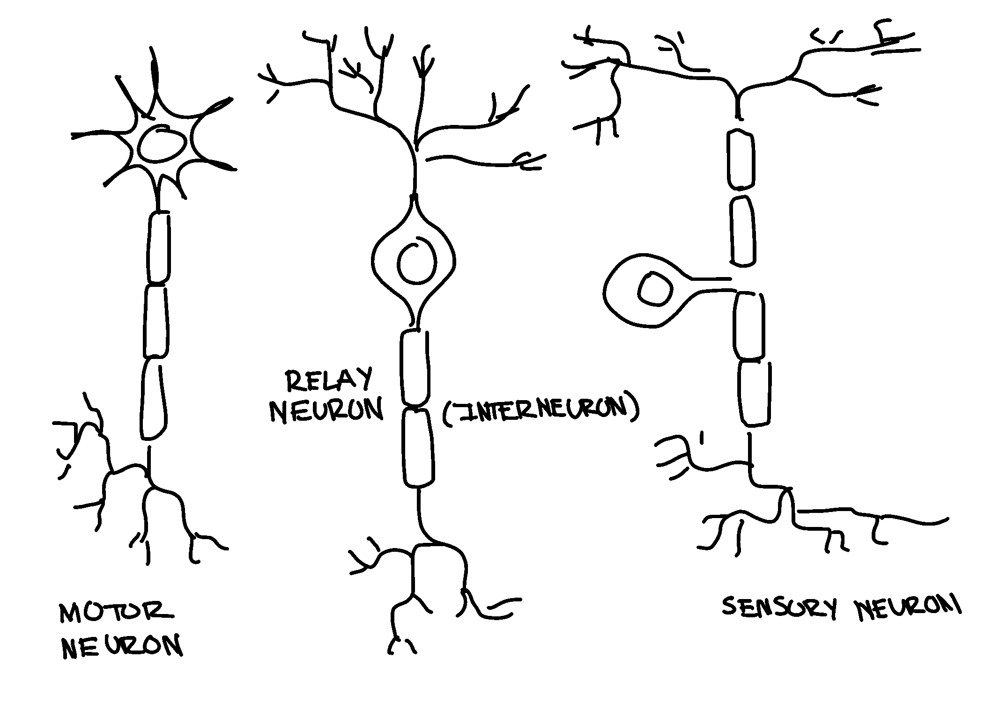
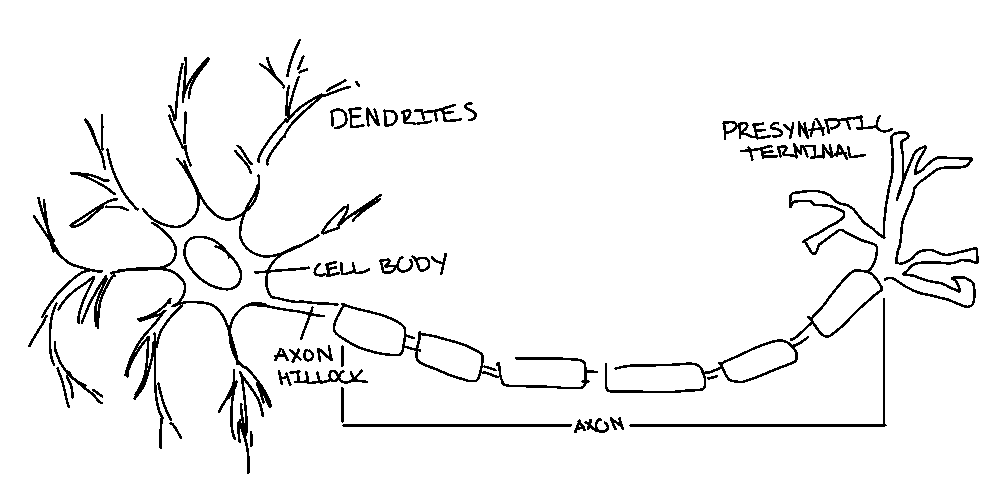
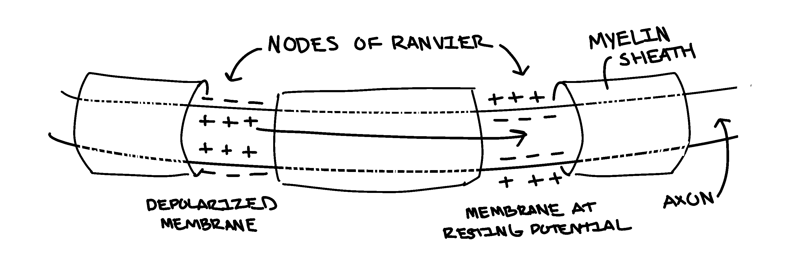
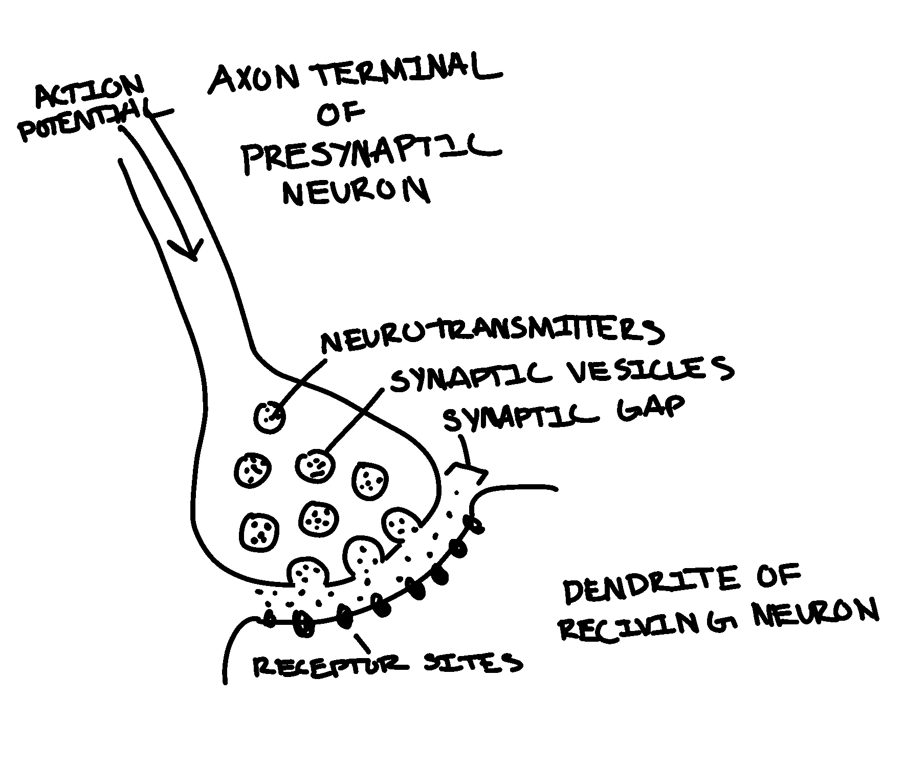
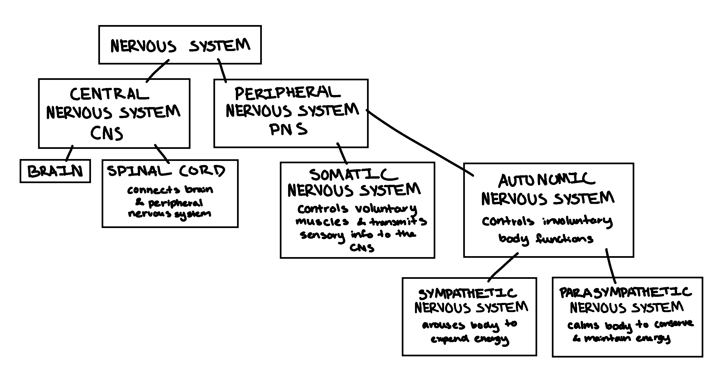
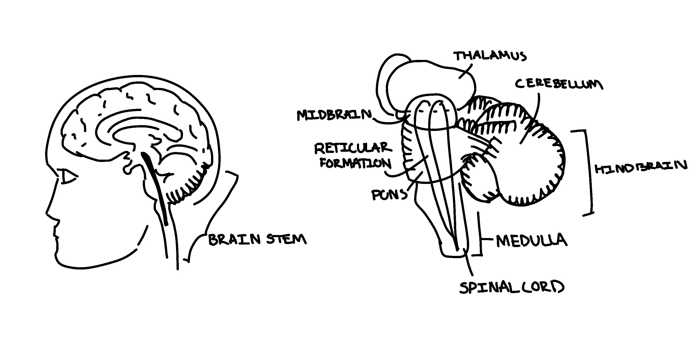
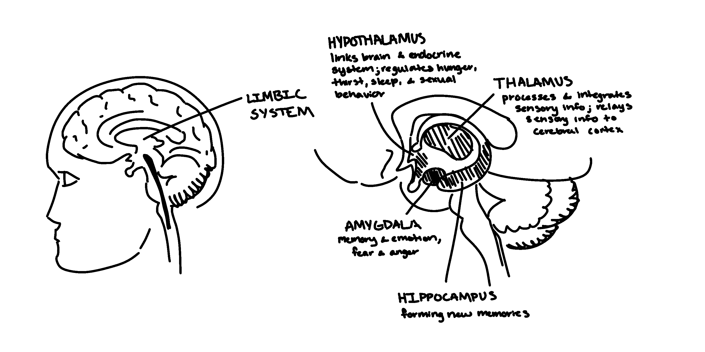
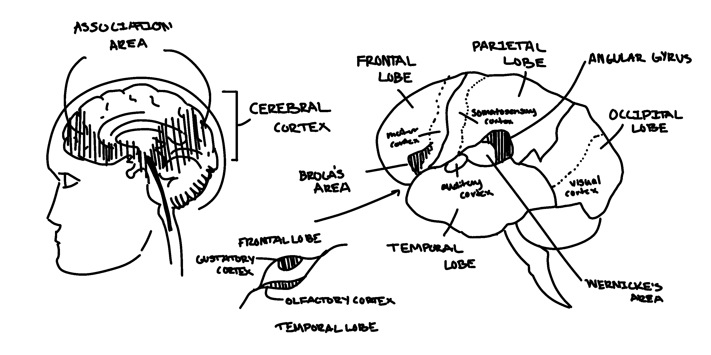

Slides
- Part 1: Researching the Biological Basis of Behavior
- Part 2: The Neuron
- Part 3: Characteristics of the Nervous System
- Part 4: The Brain
Part 1: Researching the Biological Basis of Behavior
Biological psychology is the scientific study of the biological bases of behavior and mental processes
- Neuroscience is essential to biological psychology
- the study of the nervous system, especially the brain
In order to more fully understand behavior and mental processes, psychologists investigate their physiological aspects. The mind and body are fundamentally connected; every thought or emotion is rooted in a physical process. Psychologists study how the structure and fucntion of the brain relate to various perceptions, thoughts, emotions, behaviors, etc.
Tools used to study the nervous system
Researchers select from a variety of tools depending on their goals. Some research questions pertain to brain structure, while other focus on brain activity (function).
Structural Imaging Examples
- Computed Tomography (CT)
- uses repetitive X-ray images taken from different directions to create 2-D images that computer algorithms convert to a 3-D image of a scanned region
- rough images
- assess or rule out strokes, TBIs, and tumors
- Magnetic resonance imaging (MRI)
- uses electromahnetic signals generated by the body in response to magnetic fields
- noninvasive imaging technique
- HIGHLY detailed
- images of the body's structures and tissues and brain structure
Functional (Activity) Imaging Examples
- Electroencepalography (EEG)
- small electrodes palced on scalp detect electrical charged caused by brain activity
- measures brain activity and any abnormalities in electrical charges in the brain, including some subcortical areas
- measures brain activity in real time
- used to diagnose epilepsy or sleep disorders
- Positron-emission tomography (PET) scanning
- provides color-coded images of brain activity
- tracks brain use of a radioactively tagged compound, such as glucose, oxygen, or a drug
- considered invasive due to the injection of radioactive compound
- Functional magnetic imaging (fMRI)
- uses magnetic fields to measure changes in the brain blood flow and oxygen levels
- provides msot detailed brain images and capacity to track specific brain activities
Limitations of Brain Imaging Studies
Although brain imaging technology is used in many kinds if research, it has some limitations:
- it may not increase understanding of real-time human behavior in terms of the pychological experience
- there is not always one particular brain area that responds the same way in everyone; people are"wired" differently due to the unique interplay of their genetics and experiences.
- imaging of a particular behavior must be interpreted within the context of existing psychological knowledge about the behavior
Review Questions:
- What is the primary focus of biological psychology?
- The examination of the biological bases of behavior and mental processes.
- Why is neuroscience crucial to the field of biological psychology?
- It studies the nervous system and brain, which are essential for understanding behavior and mental processes.
- What imaging technique uses X-ray images to create a three-dimensional image of a scanned region?
- CT
- What is a primary use of Computed Tomohraphy (CT) scans?
- To assess or rule out strokes, TBIs, and tumors
- Which imaging technique provides highly detailed images of the body's structures and is used to assess brain structure noninvasively?
- MRI
- How does Electroencephalography (EEG) measure brain activity?
- By detecting electrical charges from small electrodes on the scalp
- Which of the followinf techniques is considered invasive due to the injection of a radioactive compound?
- PET
- What is the primary purpose of Functional Magnetic Resonance Imaging?
- To measure changes in brain blood flow and oxygen levels, providing images of brain activities
- What is one limitation of brain imaging studies?
- They may not clarify real-time human behavior in terms of psychological experience
- Why must brain imaging finding be interpreted within the context of exsisting psychological knowledge?
- Because brain responses can vary among individuals due to unique genetics and experiences
Part 2: The Neuron
Neurons: cells that are highly specialized to receive and transmit information from one part of the body to another
3 basic types of neurons:
- Sensory neuron: conveys info about the environment from specialized recepter cells in sense organs to the brain
- Interneuron: communicates info between neurons
- Motor neuron: communicates info to the muscles and glands of the body

The Parts of the Neuron
3 Basic Parts:
- cell body: contains structures that process nutrients, providing the energy the neuron needs to function
- dendrites: receive messages from other neurons
- axon: carries info to other cells in the body, including other neurons, glands, and muscles

in order to perform their function, neurons need the support of the glial cells.
- they neurons by providing structural support and nutrition, removing cell wastes
- oligodendrocytes (a type of glial cell) form the myelin sheath, the white fatty covering that wraps around some axons
- myelin insulates axons and speeds us communication
- gaps in the myelin sheath are called nodes of Ranvier
The Basic Process of Neural Transmission:
When neuron transmit info, the info must travel within the cell, and then on to the next cell (between neurons). The processes are different:
- within the neuron: communication occurs as an electrical impulse (the action potential)
- between neurons: communication at the synapse is usually a chemical process involving neurotransmitters (chemical messengers)
Communication within the Neuron: The Action Potential
- resting potential: the negative electrical charge of the axon's interior (-70 millivolts). When the neuron is not communicating, it is "resting"
- the neuron is polarized, that is, the axon's interior is more negatively charged than the fluid surrounding the axon
- It has more sodium ions outside and more potassium ions inside
- Receptors on the dendrites are stimulated by incoming messages
Does the neuron activate (transmit info along its axon)? - only if it reaches the stimulus threshold: minimum level of stimulation required to activate a particular neuron
- when the stimulus threshold is reached, the cell body generates an action potential: a brief electrical impulse that transmits info along the axon of a neuron
- this electrical impulse is caused by the movement of ions (electrically charged particles) across the membrane of the axon
- the action potential is a successive depolarization (change in electrical charge) that occurs at the Nodes of Ranvier in myelinated axons
- the sequence of depolarization and ion movement continues in a self-sustaining fashion down the entire length of the axon. This brief positive electrical impulse (action potential) moves like a wave down the entire axon
- All-or-non law: if sufficiently stimulated, the neuron will generate a complete action potential. Neurons either fire or they dont. There is no half-way or fading impulse
- follwing the action potential, a refractory period occurs during which the neuron is unable to fire
- during this thousandth of a second or less, the neuron repolarizes
- it reestablishes the resting potential conditions

Communication between Neurons: Synaptic Transmission
- communication betwen neurons is usually a chemical process involving neurotransmitters (chemical messengers)
- the point of communication between two neurons is called the synapse
- the message-sending neuron is referred to as the presynaptic neuron
- the message-receiving neuron is called the postsynaptic neuron
the entire process of transmitting info at the synapse is called synaptic transmission
- the action potenial reaches the axon terminal (end of the axon)
- Synaptic vesicles move to the terminal membrane
- synaptic vesicles are tiny sacs in the axon terminal that contain neurotransmitters
- the synaptic vesicles open and release the neurotransmitters into the synaptic gap
- synaptic gap: the tiny (five-millionths of an inch wide), fluid-filled space between the axon terminal of one neuron and the dendrite of the adjoining neuron
- the neurotransmitters float across the tiny synaptic gap and attach to recepters on the dendrite of the postsynaptic neuron
- Lock & Key: each neurotransmitter has a chemically distinct shape. A neurotransmitter must perfectly fit a receptor site.

examples of neurotransmitters include dopamine and serotonin
- dopmaine imbalance has been implicated in schizophrenia and Parkinson's disease
- Serotonin is involved in sleep, sensory perceptions, moods, and emotional states
- serotonin imbalance has been implicated in depression
- Dopamine: in involved in movement, attention, learning, and pleasurable/rewarding sensations
depending on the receptor site to which it binds, a neurotransmitter can communicate an inhibitory or excitatory message
- Inhibitory messages: decrease the liklihood that the postsynaptic neuron will activate
- Excitatory messages: inscrease the likelihood that the postsynaptic neuron will activate
the body is very efficient, it reuses the neurotransmitters
- Reuptake: neurotransmitters detach from a postsynaptic neuron and are re-absorbed by a presynaptic neuron so they can be used again
Review Questions:
- Which type of neuron conveys information from sense organs to the brain
- sensory neuron
- What is the main function of an interneuron?
- to communicate information between neurons
- Which part of the neuron contains structures that process nutrients and provide energy?
- cell body
- What is the role of dendrites in a neuron?
- to receive messages from other neurons
- Which glial cell type forms the myelin sheath around some axons?
- oligodendrocytes
- what are the nodes of Ranvier?
- gaps in the myelin sheath
- what is the resting position of a neuron's axon?
- -70 millivolts
- What does the tern "all-or-none law" refer to in neural transmission?
- neurons either generate a complete action potential or do not fire at all
- what happens during the refractory period of a neuron?
- the nueron is repolarzing and reestablishing resting potential conditions
- What process involves neurotransmitters moving across the synaptic gap?
- synaptic transmission
- What is the "Lock & Key" relationship in neurotransmission?
- Each neurotransmitter has a chemically distinct shape and must fit a specific receptor site
- Which neurotransmitter is associated with movement, attention, learning, and rewarding sensations?
- Dopamine
- Which neurotransmitter is involved in mood regulation and sleep?
- Serotonin
- What is the purpose of reuptake in neurotransmission?
- To recycle neurotransmitters for future use
Part 3: Characteristics of the Nervous System

The Major Divisions and Subdivisions of the Human Nervous System
the nervous system is the primary intercommunication network of the body
- it includes up to 1 trillion linked neurons in a complex, organized communication netowork
- it is divided into central nervous system (CNS) and the peripheral nervous system (PNS)
The central nervous system
includes the brain and spinal cord and is central to all behaviors and mental processes.
- the brain functions as a command center and
- the spinal cord handles incoming (sensory) and outgoing (motor) messages; connects the brain and peripheral nervous system
The peripheral nervous system
communication occurs along nerves (bundles of neuron axons) and includes all the nerves lying outside the central nervous system; carries messages to and from the CNS. it is further divided into:
- Somatic nervous system: controls voluntary mesclues and transmits sensory information to the CNS
- Autonomic nervous system: controls involuntary body functions. this is further split into:
- Sympathetic nervous system: arounses body to expend energy
- Parasympathetic nervous system: calms body to conserve and maintain energy
The Mechanuisms of, and the Importance of, Plasticity of the Nervous System
Until the mid '60s, it was believed that the brain's physical structure was hardwired or fixed for life. However, research shows the human brain's remarkable capacity to change in function and structure in response to experience (neuroplasticity). The brain is constantly being rewired.
- Structural plasticity: brain's ability to change its physical structure in repsonse to learning, active practice, or environmental influences
- studies show measurable brain changes (e.g., increases in gray matter) after learning and actively practicing new skills
- Functional plasticity: brain's ability to shift functions from damaged to undamaged brain areas
- this is best achieved with rehabilitation (e.g., occupational therapy, physical therapy, speech therapy, etc.)
whereas plasticity largely reflects the formation and strengthening of connections among existing neurons, researchers have also studied the brains abilities to make new neurons: Neurogenesis (development of new neurons)
- new neurons are incorporated into existing neural networks
- involved in structural plasticity for learning memory in many areas of the brain, including the hippocampus and the cortex
Review Questions
- Which of the following best describes the function of the central nervous system?
- It is central to all behaviors and mental processes
- What role does the spinal cord play in the nervous system?
- it handles incoming (sensory) and outgoing (motor) messages
- what is included in the peripheral nervous system (PNS)
- nerves outside the central nervous system
- which of the following is a main component of the central nervous system?
- spinal cord
- what was the prevailing belief about the brain's physical structure until the mid '60s
- the brain's physical structure was hardwired or fixed for life
- what does structural plasticity refer to?
- the brain's ability to change its physical strcutre in response to learning and environmental influences
- functional plasticity is best achieved through which of the following methods?
- rehabilitation therapies such as occupational therapy and physical therapy
- what is neurogenisis?
- the development of new neurons that are incorporated into existing neural networks
Part 4: The Brain
The Structures and Fuctions of the Various Parts of the Brainstem
Brainstem: a region of the brain made up of the hindbrain and the midbrain, located at the base of the brain

The Hindbrain:
the hind brain connects the spinal cord with the rest of the brain. its strcutures and functions:
- Medulla: controls vital life functions such as breathing, circulation, vital reflexes, etc.
- Pons:: connects the medulla to two sides of the cerebellum; helps coordinate movements on each side of the body
- Cerebellum: two-sied structure at back of brain; responsible for muscle coordination and maintaining posture and balance
- Reticular formation(reticular activating system): netowrk of nerve fibers located in the center of the medulla
- helps regulate attention, arousal, and sleep
- composed of many spcialized cell groups that project up to higher brain regions and down spinal cord
The Midbrain:
area of the brain directly above the hindbrain; functions as an important relay station that contains center involved in the processing of auditory and visuak sensory information and aids in automatic adjustments to surroudning sights and sounds
- these automatic adjustments to external stimuli have survival value
The Structures and Functions of the Various Parts of the Forebrains
The Forebrain (cerebrum):
largest and most complex brain region containing centers for complex behaviors and mental processes. includes the limbic system and the cerebral system.
- The limbic system: a group of forebrain structures that form a border around the brainstem and are involved in emotion, motivation, learning, and memory. It includes:
- Hippocampus: large structure embedded in the temporal lobe in each cerebral hemisphere
- plays a role in the ability to form new memories of events and information
- Thalamus: rounded structure located within each cerebral hemisphere
- processes sensory information (except smell) and distributes motor informatioon and sensory information going to and from the cerebral cortex
- Hypothalamus: small structure located below the thalamus
- regulates both division of the autonomic nervous system and behaviors related to survival, such as eating, drinking, frequency of sexual activity, fear, and aggression
- directly influences the endocrine system via the pituitary gland
- Amygdala: cluster of neurons at base of temporal lobe
- involved in a variety of neurons at the base od temporal lobe
- contributes to detection of threatening stimuli; brain's lookout
- involved in learning and forminf memories; especially those with strong emotional component
- word: word
- The cerebral cortex: the wrinked outer portion of the forebrain, which contains the most sophisticated brain centers
- divided into two cerebral hemispheres (nearly symmetrical left and right halves if the cerebral cortex)
- connected by corpus callosum: thick band of axons that connects the two cerebral hemisphered and acts as a communication links between them
- lobes of the cortex: each hemiphere of the cerebral cortext can be divided into fours regions, or lobes. each lobe is associated iwth distinct functions
- Occipital lobe: area at back of each cerebal hemisphere that is primary receiving area for visual information
- primary visual cortext receives visual information
- visual association cortext makes sense of the visual info by processing and integrating info
- association areas exist in all lobes and are critically important to making sense of our perceptions
- Temporal lobe: area on each hemisphere of cerebral cortext, near the temples, that is primary receiving area for auditory information
- receives basic auditory info from the ears
- helps brain recognize and give meaning to different sounds
- Parietal lobe: area on each hemisphere of cerebral cortext, loccated above temporal lobe, tha tprocesses body's sensations
- somatosensory information includes touch, temperature, pressure, and receptor info in muscles and joints
- Primary somatosensory cortex receives info from touch recetors in different parts of the body
- body's representation on the somatosensory cortex is not proportional, but based on the sensitivity of that body area
- Frontal lobe: largest lobe of each cerebral hemisphere; processes voluntary muscle movements
- involved in thinking, planning, and emotional control, as seen in Phineas gage's case
- contains the prefrontal cortex; the central exective of human brain
- plays a role in motor control through primary motor cortex
- body's representation on the primary motor cortex is not proprtional, but based on the amount of processinf required for motor control of that body area
- involved in planning, initiatinf, and executinf voluntary movements


Review Questions
- which of the following structures is NOT part of the brainstem
- amygdala
- what is the primary role of the medulla in the brainstem?
- controls vital life functions such as breathing and circulation
- what is the main function of the reticular formation (reticular activating system)
- regulates attention, arousal, and sleep
- what is the primary function of the midbrain within the brainstem?
- serves as a relay station for processing auditory and visual sensory information
- which of the following structures is NOT part of the limbic system?
- pons
- what is the primary function of the hippocampus
- involved in forming new memories of events and information
- which structure in the forebrain is directly responsible for regulating behaviors related to survial, such as eating and drinking?
- hypothalamus
- what role does the corpus callosum play in the cerebral cortex?
- connects the two cerebral hemispheres and facilitates communication between them
- which of the follwoing lobes of the cerebral cortex is primarily involved in processing sensory information such as touch, temperature, and pressure?
- the parietal lobe
- what is the function of the amygdala in the limbic system
- detects threatening stimuli and is involved in emotional responses such as fear and anger
- what is the main fucntion of the visual association cortex?
- integrates and processes visual information to makes sense of it
- which love od the brain is primarily involved in recognizing and giving meaning to different sounds
- temporal lobe
- how is the body's representation on the primary motor cortex different from its representation on the primary somatosensoru cortex?
- it is based on the amount of processing required for motor control and sensitivity respectively